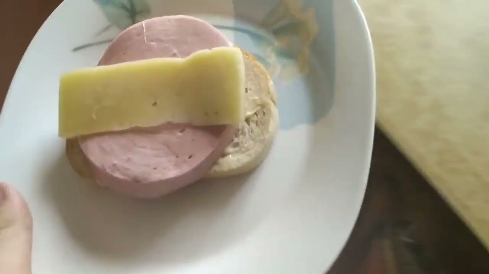

Sandwich

Description
New type of sandwich invented by a famous youtuber from Latvania Baltalietuvis!
Can be enjoyed using microwave.
Ingredients
- Bread.
- Doctor sausage - the more the better. Also known as blended pig.
- Cheese - the less the better.
Steps
- Take a slice of bread
- Put a very thick slice of doctor sausage.
- Put a thin slice of cheese on top.
- Microwave on full power for 10 minutes.
- Enjoy.